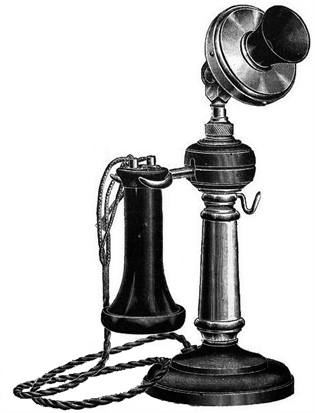

INCONSCIENT
"En hypnose, vous cessez d’utiliser votre esprit conscient ; en hypnose, vous commencez à utiliser votre esprit inconscient. Parce que, inconsciemment, vous en savez autant et même bien plus que ce que vous savez consciemment." Milton ERICKSON
Au cours de l’histoire et selon les cultures, on le nomme âme, énergie, essence, esprit, intuition, etc. Quel que soit son nom, l’idée commune est que nous ne maîtrisons pas tout en nous,. D'un rêve à une forte émotion irrépréhensible, il est clair qu’une partie de nous « gère » sans avoir besoin de nous demander systématiquement notre avis. L’inconscient est comme son nom l’indique, tout ce qui n’est pas conscient. On peut le considérer comme un langage à part entière que le conscient ne décripte que trop peu quand il y porte attention.
Et pour cette conscience autonome que l'on appelle Inconscient, difficile de dire que telle partie du cerveau lui est dédiée. L'inconscient est ce qui échappe à la conscience : c'est une notion qui relève de la psychologie et de la psychanalyse, pas de la neurologie. La distinction entre le psychologique et le neuronal est du même ordre qu'entre le mental et le cérébral ou l'esprit et le cerveau. Différentes écoles de pensée existent sur le sujet. Pour certaines, "tout est affaire de neurones" ; pour d'autres, "tout est affaire de mental" ; pour d'autres encore, "il existe un lien de causalité entre mental et cérébral". La science qui étudie ces liens, les localisations cérébrales des fonctions psychologiques est la psychophysiologie. C'est dans l'hypothalamus, par exemple, que les sentiments de soif, de faim, et de satiété prennent naissance. Pour les désirs en général (conscients ou inconscients), c'est moins clair. Quant à l'inconscient, il existe bien un lieu où il s'exprime : le rêve. On peut savoir par imagerie médicale quelles zones du cerveau sont sollicitées quand on rêve. Pour autant, ce qu'on voit n'est pas la "niche" de l'inconscient, mais seulement ses effets sur le cerveau. Et pour y accéder on utilise la transe sous diverse formes.
L'hypnose permet de vivre un état de conscience particulier, dans lequel l'inconscient se loge au premier plan. Pour l’hypnose Ericksonienne, l’inconscient est un réservoir d’expériences, de capacités, de ressources qui favorisent la résolution potentielle de nos problèmes. Milton H. Erickson part du postulat que l’inconscient fait toujours de son mieux pour nous venir en aide compte tenu des informations dont il dispose sur nous et notre environnement.
Et pour cette conscience autonome que l'on appelle Inconscient, difficile de dire que telle partie du cerveau lui est dédiée. L'inconscient est ce qui échappe à la conscience : c'est une notion qui relève de la psychologie et de la psychanalyse, pas de la neurologie. La distinction entre le psychologique et le neuronal est du même ordre qu'entre le mental et le cérébral ou l'esprit et le cerveau. Différentes écoles de pensée existent sur le sujet. Pour certaines, "tout est affaire de neurones" ; pour d'autres, "tout est affaire de mental" ; pour d'autres encore, "il existe un lien de causalité entre mental et cérébral". La science qui étudie ces liens, les localisations cérébrales des fonctions psychologiques est la psychophysiologie. C'est dans l'hypothalamus, par exemple, que les sentiments de soif, de faim, et de satiété prennent naissance. Pour les désirs en général (conscients ou inconscients), c'est moins clair. Quant à l'inconscient, il existe bien un lieu où il s'exprime : le rêve. On peut savoir par imagerie médicale quelles zones du cerveau sont sollicitées quand on rêve. Pour autant, ce qu'on voit n'est pas la "niche" de l'inconscient, mais seulement ses effets sur le cerveau. Et pour y accéder on utilise la transe sous diverse formes.
L'hypnose permet de vivre un état de conscience particulier, dans lequel l'inconscient se loge au premier plan. Pour l’hypnose Ericksonienne, l’inconscient est un réservoir d’expériences, de capacités, de ressources qui favorisent la résolution potentielle de nos problèmes. Milton H. Erickson part du postulat que l’inconscient fait toujours de son mieux pour nous venir en aide compte tenu des informations dont il dispose sur nous et notre environnement.

La perspective Ericksonienne part d’une idée simple : l’inconscient est un allié et non un lieu de refoulement. Il a pour fonction principale de faire fonctionner le corps d’une manière efficace et favorise entre autre la régulation de ses grandes fonctions : respiration, circulation sanguine, cicatrisation, immunité, digestion, etc.
Il arrive parfois que l’inconscient, dans un soucis d’équilibre, se manifeste par un ou des symptômes précis sans pour autant que l’organisme, dans sa structure, ne soit lésé. Dans le langage populaire, on dit alors que le trouble physique est de nature psychique donc « c'est psychosomatique ! » ce qui est tout à fait juste. C'est un discours de l'inconscient vers le conscient!
L’inconscient se charge également de gérer la mémoire et les apprentissages. Il stocke toutes les informations récoltées des expériences vécues et favorise l’utilisation des apprentissages acquis de celles-ci. C'est de cette manière que certains apprentissages et comportements deviennent des routines et d'autres encore deviennent plus naturels encore ou automatiques : marcher, parler, manger, lire, écrire, s’habiller, conduire, etc.
En hypnose Ericksonienne l’inconscient est fondamentalement bienveillant. Le rôle de notre inconscient est de nous faire vivre au mieux en s’appuyant sur nos expériences et nos connaissances du moment.
Il arrive parfois que l’inconscient, dans un soucis d’équilibre, se manifeste par un ou des symptômes précis sans pour autant que l’organisme, dans sa structure, ne soit lésé. Dans le langage populaire, on dit alors que le trouble physique est de nature psychique donc « c'est psychosomatique ! » ce qui est tout à fait juste. C'est un discours de l'inconscient vers le conscient!
L’inconscient se charge également de gérer la mémoire et les apprentissages. Il stocke toutes les informations récoltées des expériences vécues et favorise l’utilisation des apprentissages acquis de celles-ci. C'est de cette manière que certains apprentissages et comportements deviennent des routines et d'autres encore deviennent plus naturels encore ou automatiques : marcher, parler, manger, lire, écrire, s’habiller, conduire, etc.
En hypnose Ericksonienne l’inconscient est fondamentalement bienveillant. Le rôle de notre inconscient est de nous faire vivre au mieux en s’appuyant sur nos expériences et nos connaissances du moment.
EN RELATION

PSYCHOSOMA
EMOTION
COMPORTEMENT